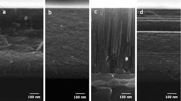
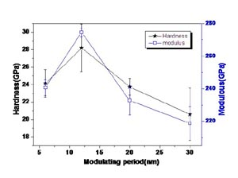
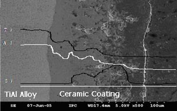
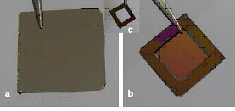
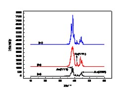

纳米薄膜与材料表面改性研究
金属和合金是工程领域的基本材料，被广泛应用于工程技术和机械制造的各个方面。进一步改进金属材料表面的机械性能和化学腐蚀性能是材料科学与工程技术领域的主要研究方向。目前我们正致力于发展金属和合金材料的表面处理新技术新方法，如新型表面涂层技术、材料表面离子束改性技术以及微弧氧化技术。
TiN薄膜和TiN/(TiAl)N 纳米多层薄膜研究
过渡金属氮化物由于其具备优秀的电学、机械、热学和摩檫学等内禀特性，在扩散阻挡层、切割工具或加工设备上的硬质或耐磨涂层以及防腐涂层等领域得到广泛的应用。目前我们正致力于利用磁过滤脉冲阴极真空电弧等离子体技术，研究在钛合金基体上制备具有不同纳米调制波长的TiN/TiAlN多层薄膜。图1和图2显示了不同调制波长的TiN/TiAlN多层薄膜的微结构和特性。


有色金属表面微弧氧化研究
微弧氧化能够在Al、Mg、Ti及其合金的表面原位形成陶瓷薄膜，是一种新型的金属表面处理技术。在Al、Mg、Ti及其合金表面形成的微弧氧化陶瓷薄膜，具有高的表面硬度、优异的耐磨和耐腐蚀性能，被广泛应用于军事、纺织机械、化工、汽车、电子、航天航空和医疗器械等领域。目前我们正致力于在TiAl合金的表面发展陶瓷薄膜的原位制备技术，以进一步提高它们的耐磨和耐腐蚀性能。图3和图4 显示了TiAl合金表面微弧氧化薄膜的微结构和力学特性。

DLC/Al2O3复合涂层研究
微弧氧化技术在铝合金基体表面上制备氧化铝薄膜，然后利用在氧化铝薄膜上利用磁过虑脉冲真空弧技术沉积一层类金刚石涂层，这种复合涂层具有较低的摩擦系数和较高的结合力，能够很好地改善微弧氧化薄膜的抗摩损性能。下图所示为2024铝合金表面复合涂层的摩擦磨损性能的测量结果。

无支撑金属纳米多层薄膜的制备与结构研究
无支撑薄膜在重离子加速器、超导直线加速器、高分辨率的飞秒（TOF）光谱仪以及一些原子和核物理探测诸如惯性约束聚变（ICF）研究中，起到十分重要的作用。它们可以用来作为剥离膜、二次电子发射器和核物理靶膜；有些无支撑膜由于其具有选择反射和透射特性，还可应用在极紫外和软X射线领域。我们通过基底制备、薄膜沉积、基底刻蚀等过程过程，成功制备出无支撑的Au/Fe、 Au/Ni金属纳米多层膜。我们目前正致力于研究金属多层膜的超晶格结构及其对金属多层膜功能特性的影响。图5所示为Au/Ni多层膜的正面照片（a）和背面照片（b）、透明Si3N4基底（c），图6所示为金属多层膜中的超晶格结构。

